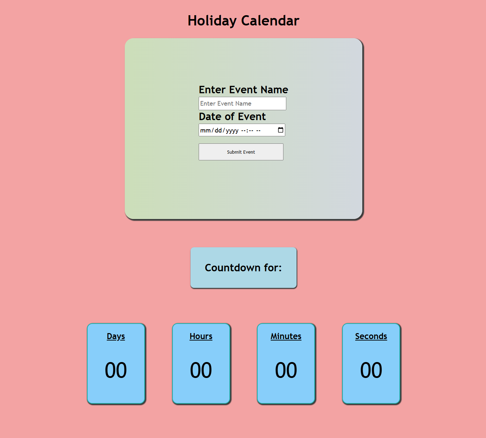
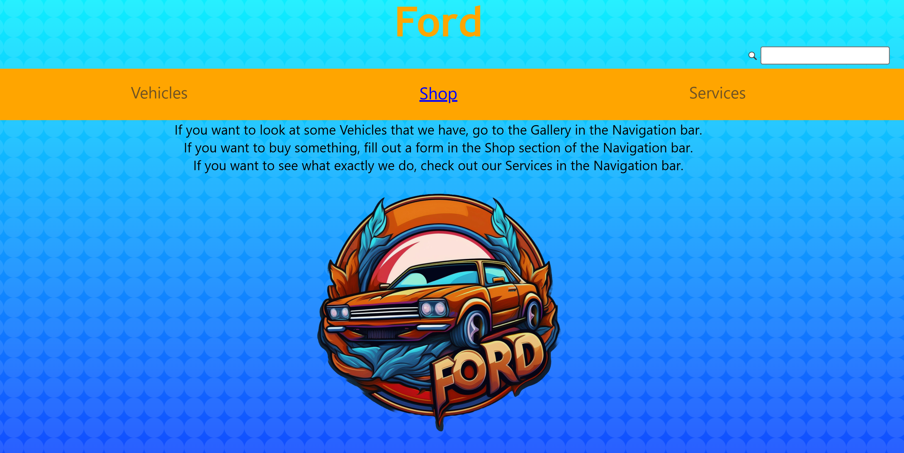

Recent Accomplishments
Holiday Clock Timer
A website where you input your event name and time and starts a countdown.
JS Only Web Design
Creating a website ONLY using JavaScript.

Business Partner Project
A website designed as a fictional business with a partner.
